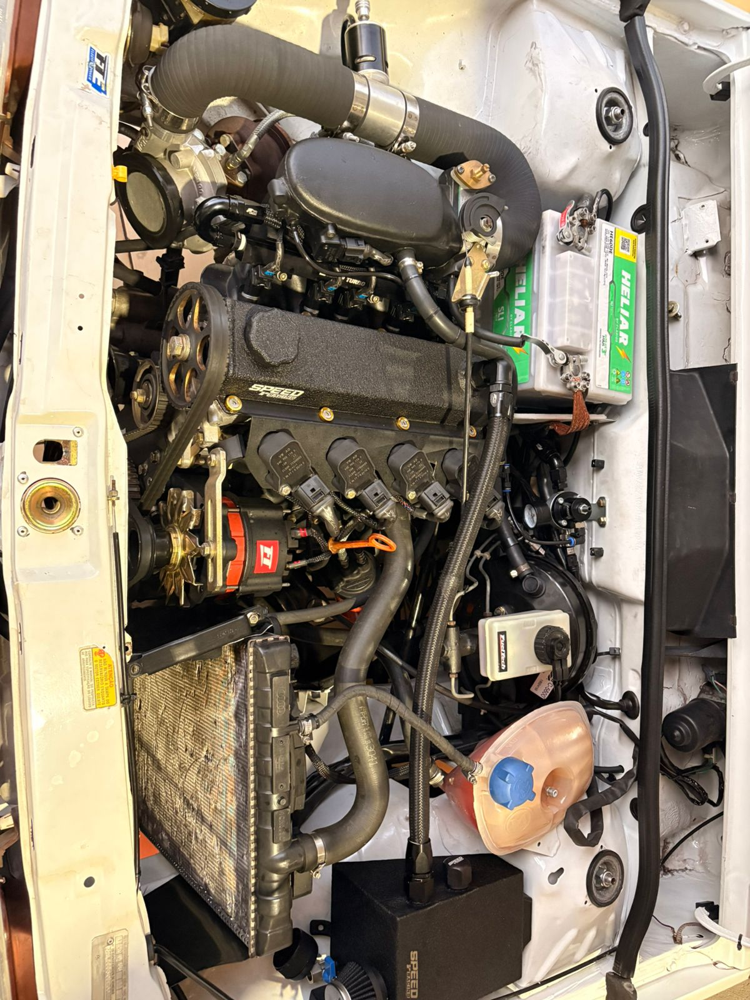

Como surgiu o Volkswagen Gol
O Volkswagen Gol foi lançado oficialmente no Brasil em 1980 pela Volkswagen. O modelo foi criado para substituir o Fusca, que era o carro mais popular da marca. O Gol foi desenvolvido especialmente para o mercado brasileiro e fazia parte da família BX.
No início, o carro utilizava motor refrigerado a ar, semelhante ao do Fusca. Porém, as primeiras vendas não foram muito boas. Pouco tempo depois, a Volkswagen lançou versões com motor refrigerado a água, tornando o carro muito mais moderno e econômico.



Características do primeiro Gol
- - Motor refrigerado a ar
- - Design quadrado
- - Baixo consumo de combustível
- - Fácil manutenção
- - Grande sucesso no Brasil
Por que o Gol ficou famoso?
- Era um carro econômico e resistente
- Possuía manutenção barata
- Foi muito usado por famílias brasileiras
- Virou símbolo dos anos 80 e 90
- As versões esportivas ficaram muito conhecidas
Curiosidade
O Volkswagen Gol foi um dos carros mais vendidos da história do Brasil. Durante muitos anos, liderou o ranking de vendas no país e se tornou um dos veículos mais queridos pelos brasileiros.